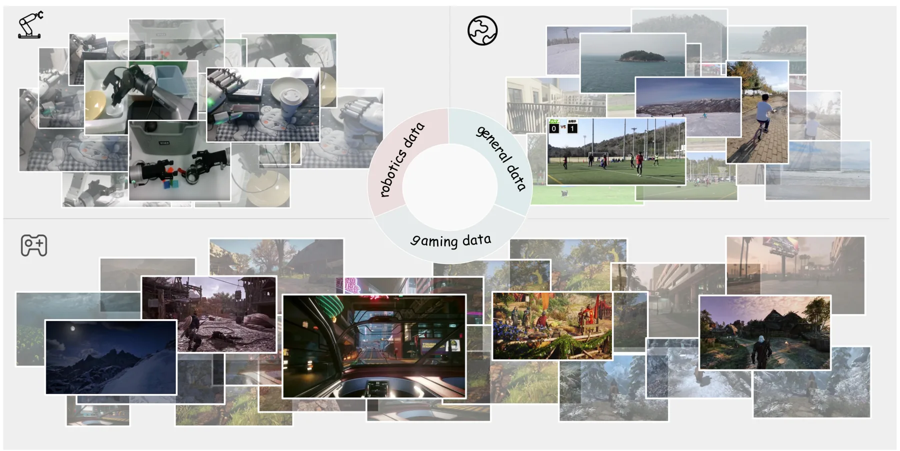
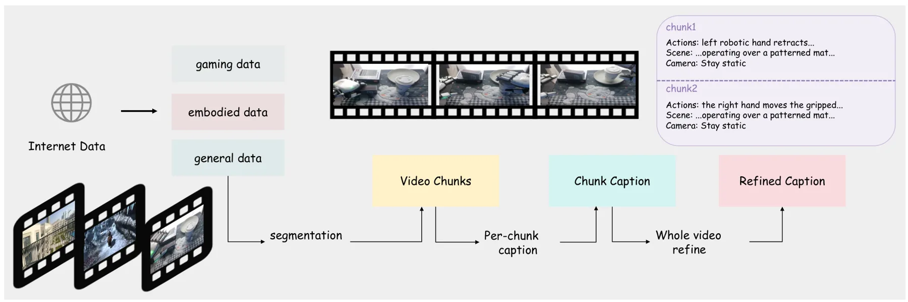
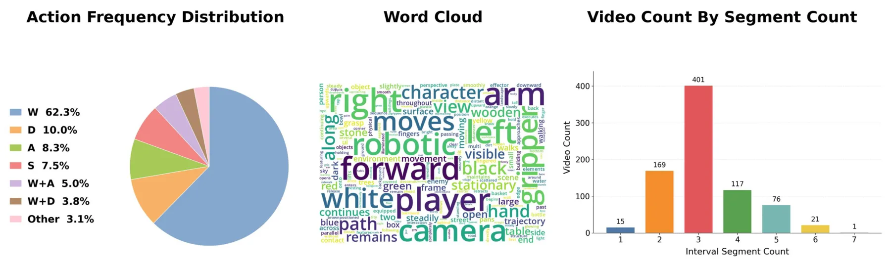
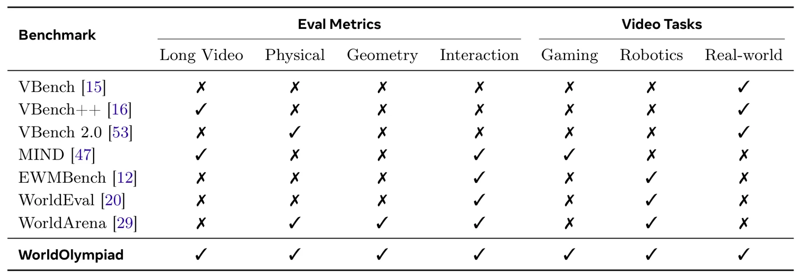
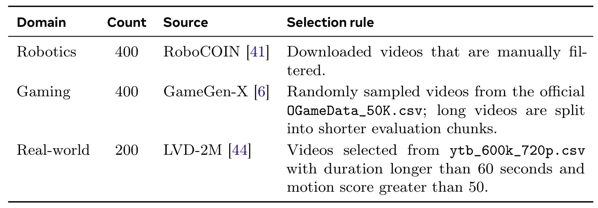

WorldOlympiad：面向物理、几何和交互的世界模型三项赛评测WorldOlympiad: Can Your World Model Survive a Triathlon?
方法本身不是 SLAM，但几何评测 protocol 对机器人仿真、世界模型数据合成和生成视频 3D 一致性筛选有参考价值。
一句话工作总结
WorldOlympiad 用物理、几何和交互三条赛道评测世界模型，其中几何赛道通过 Gaussian splatting 检查 3D 一致性。
摘要
WorldOlympiad 是一个用于诊断视频世界模型的 benchmark，覆盖物理真实性、几何一致性和交互保真度。现有 benchmark 多关注视觉质量、语义对齐或短期时序一致性，难以判断生成视频是否遵守物理规则、保持连贯 3D 结构并支撑长时可控交互。WorldOlympiad 将评测拆为三个互补维度：physical track 使用对象分割和 MLLM-as-judge 评估力学、热现象和材料属性；geometry track 使用 Gaussian splatting 重建生成视频，并评估结构一致性、跨视角一致性和相机轨迹对齐；interaction track 评估复杂动作提示和跨视频块连续性。该 benchmark 覆盖游戏、机器人和通用真实视频场景，实验揭示当前 SOTA 模型在物理推理、3D 一致性和长时交互方面仍有明显缺口。
We introduce WorldOlympiad, a benchmark for diagnosing video-based world models across physical faithfulness, geometric consistency, and interaction fidelity. While existing benchmarks often focus on visual quality, semantic alignment, or short-term temporal coherence, they provide limited insight into whether generated videos obey physical rules, preserve coherent 3D structure, and sustain controllable interactions over long horizons. To address this gap, WorldOlympiad decomposes world-model evaluation into three complementary dimensions. The physical track uses object segmentation and MLLM-as-judge to assess whether generated videos follow interpretable rules in mechanics, thermal phenomena, and material properties. The geometry track reconstructs generated videos with Gaussian splatting and evaluates structural consistency, cross-view coherence, and camera-trajectory alignment. The interaction track assesses whether generated rollouts follow complex action prompts and maintain smooth, coherent transitions across consecutive video chunks. WorldOlympiad further covers three major downstream scenarios, including gaming, robotics, and general real-world videos, capturing diverse challenges from interactive control and embodied manipulation to open-domain motion and camera dynamics. Together, these tracks and scenarios form a scalable and interpretable evaluation suite that exposes failure modes beyond generic video quality. Experiments on state-of-the-art models reveal substantial gaps in physical reasoning, 3D consistency, and long-horizon interaction, underscoring the need for more structured evaluation protocols for generative world models.
中文解读摘录
- 作者：Ray Zhang, Marcus Greiff, Thomas Lew, John Subosits；类别：cs.CV / cs.AI / cs.RO；发布日期：2026-06-09；备注：16 pages, 12 figures；采集 score=14
- 核心问题：局部点云配准在 LiDAR/RGB-D tracking 中通常依赖 correspondences 或 ICP 类最近邻，特征稀疏、退化或外观变化时容易漂移；RKHS/CVO 类 correspondence-free 方法更稳但一阶优化速度偏慢。
- 方法亮点：把点云表示为带 point-wise anisotropic kernels 的连续函数，核函数编码局部几何，使法向方向更强约束、切向方向更宽松；优化上提出带近似 Riemannian Hessian 的二阶流形优化。
- 结果信号：相对以往一阶 RKHS 配准 solver 最高加速约 10×；在驾驶域 LiDAR tracking 的特征稀疏场景中，平移和旋转漂移均降低超过 55%；RGB-D 与物体配准 benchmark 也显示比 ICP 类方法更稳。
- 关注价值：这是今天最接近 SLAM 前端/里程计的工作。若开源或实现成本可控，值得尝试替换/增强 frame-to-frame LiDAR odometry、RGB-D odometry 和全局初始化后的精配准模块。
图表/页面预览

{kind=link}

{kind=link}

{kind=link}

{kind=link}

{kind=link}
